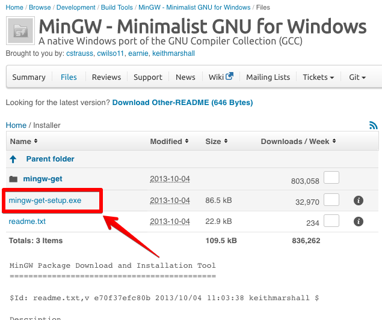
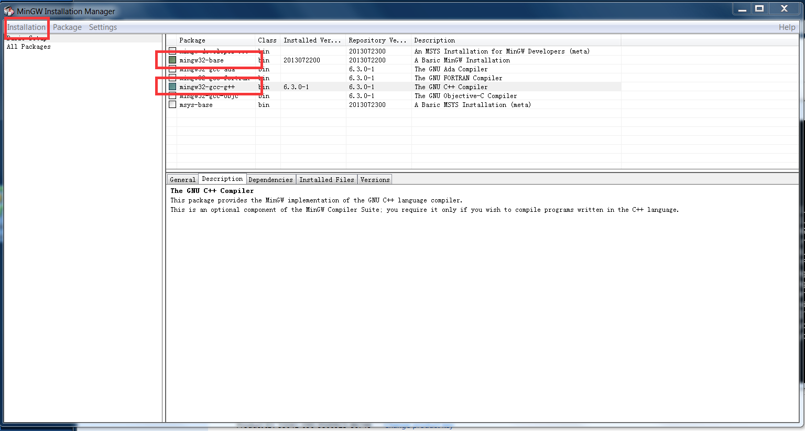
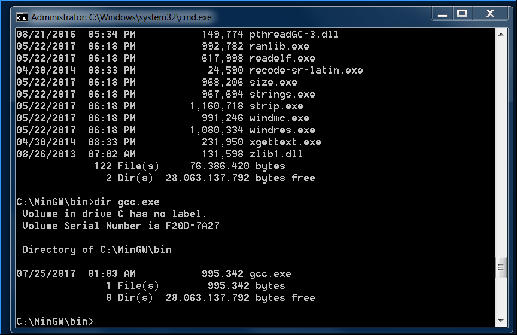
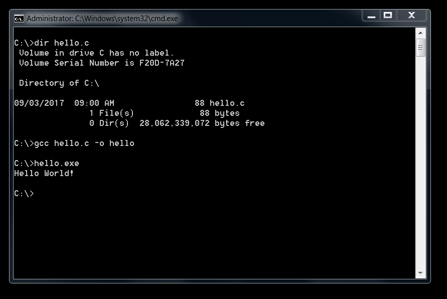

第一周
C Primer Plus (第五版)
https://book.douban.com/subject/1240002/AT&T 贝尔实验室
1972年 Dennis Ritchie
开发Unix
↓
↓
↓
c = a + b;
↓
高效性
可移植性
强大的功能和灵活性
面向编程人员
↓
↓
语言与实现
标准库
1978年 K&R C
1990年 ANSI/ISO C (C90)
1994年 C99标准
如何实现功能
如何组织代码
采用何种数据结构／算法
等等等等。。。
#include <stdio.h>
int main(void)
{
printf("Hello, world.\n");
return 0;
}
↓
bug
debug
课程介绍
学习方法
C语言历史
操作系统
高级语言
Hello, world
安装Visual Studio Code
↓
↓
↓
C语言编译器: MinGW
↓
下载MinGW安装器并安装
https://sourceforge.net/projects/mingw/files/Installer/ ↓
选择mingw32-base和mingw32-gcc-g++后，点击Installation->Apply Changes
↓
C:\WinGW\bin目录下包含gcc.exe
↓
编译并运行Hello, world程序
